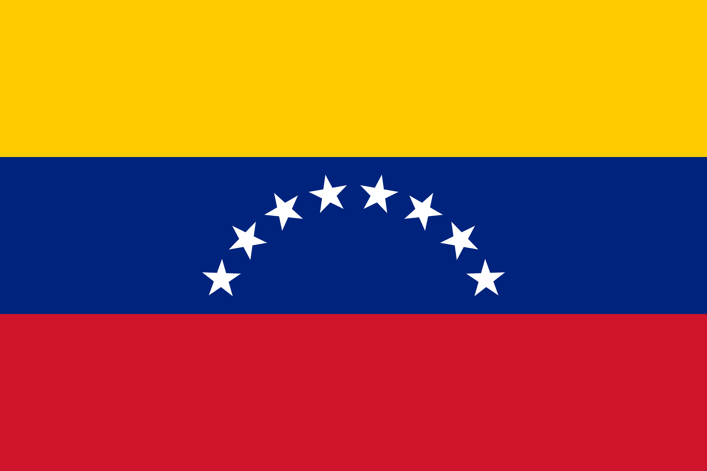

Luis Villegas
About Me

Hello! My name is Luis Villegas. I am learning web development in WDD 131. I am from Venezuela. I enjoy spending time with my family and playing sports, although I enjoy working out even more. I am a very cheerful person and I am almost always optimistic. I get excited about learning new things, and I have a great desire for success so that I can never be separated from my family and can help others.
Venezuela

Venezuela is a country located in northern South America. It is known for its beautiful landscapes, rich culture, and diverse nature. The country has beaches, mountains, jungles, and Angel Falls, the tallest waterfall in the world. Venezuelan culture is influenced by Indigenous, African, and Spanish traditions. The country is also known for its music, warm people, and traditional foods like arepas. I love my country